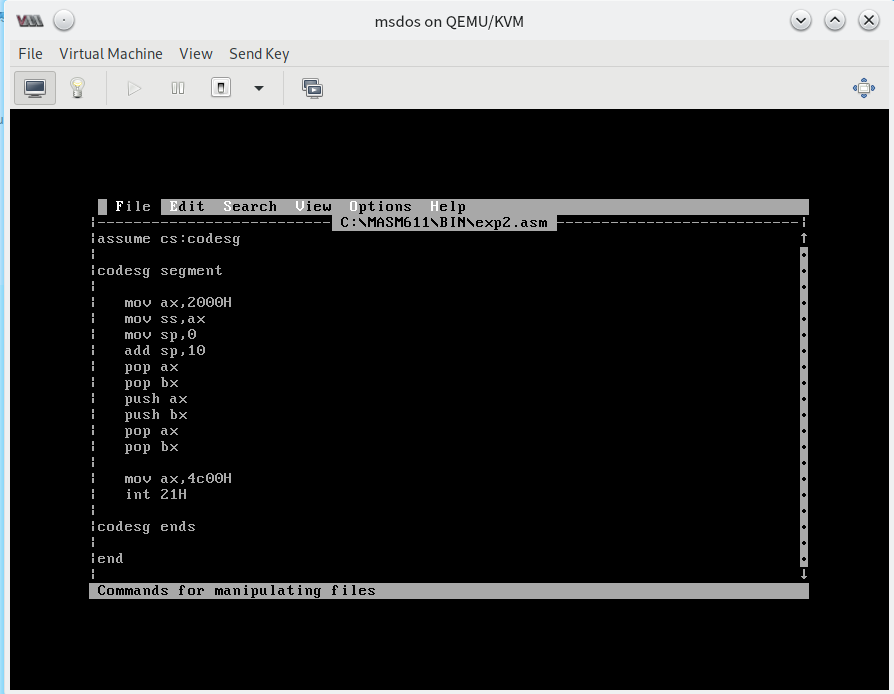
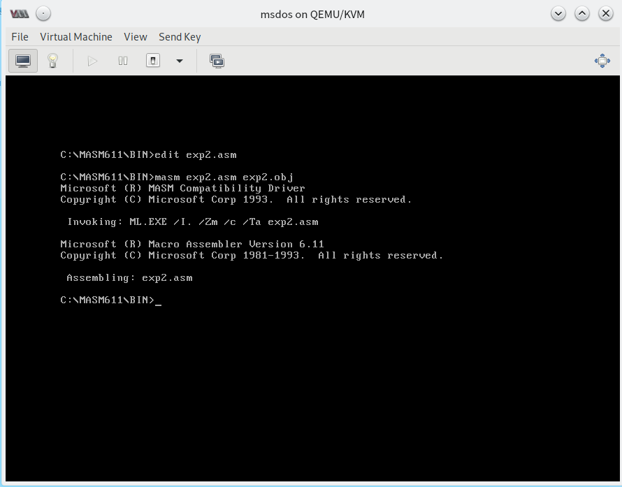
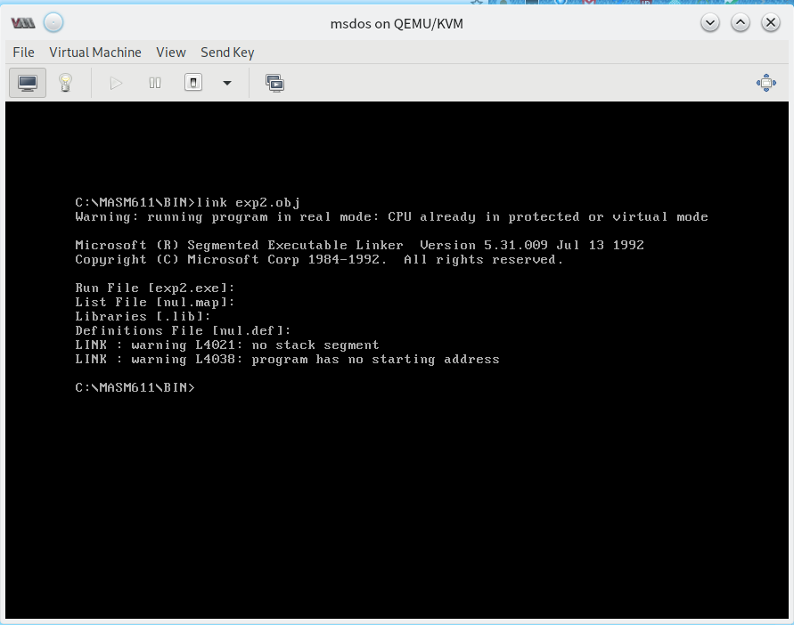
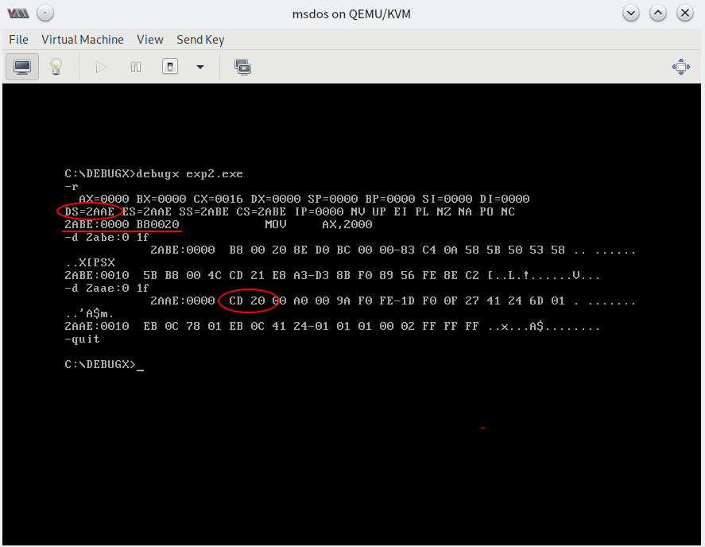
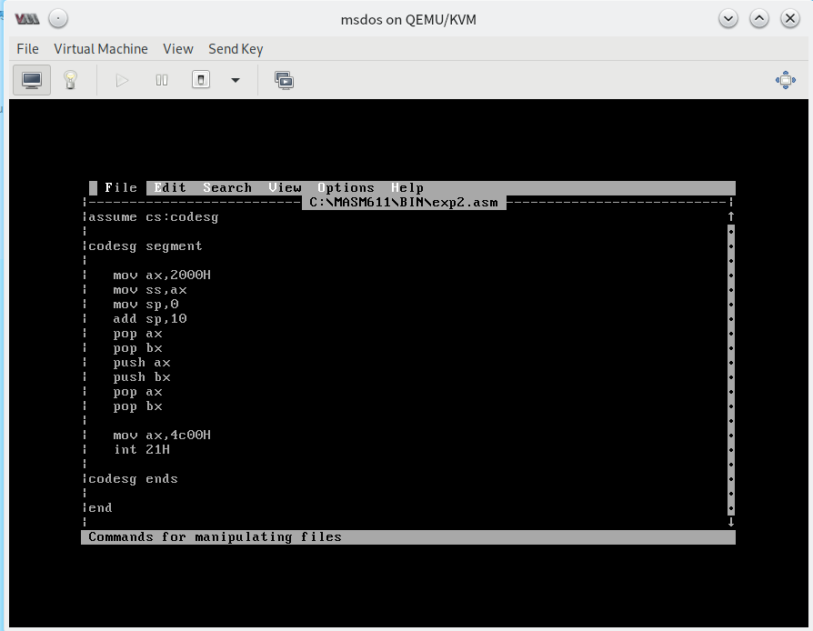
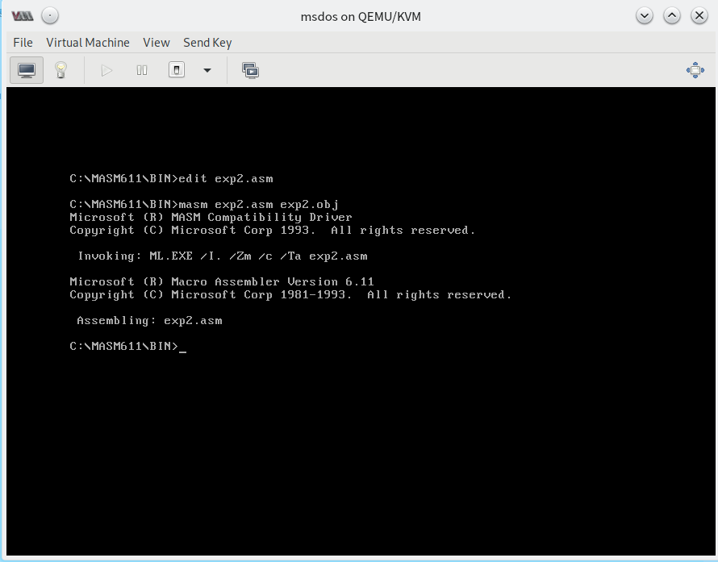
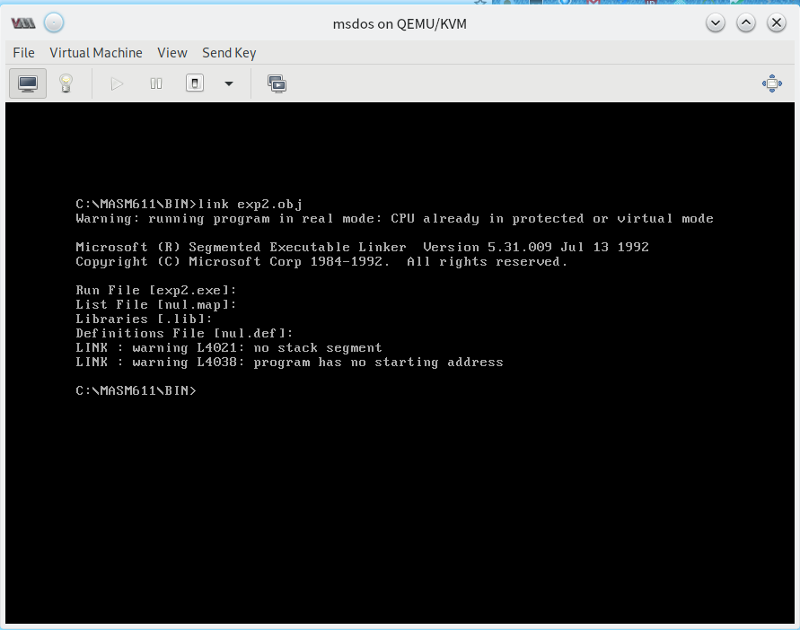
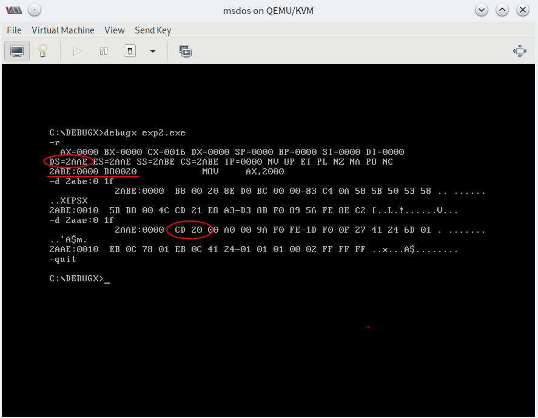

实验二：编程、编译、链接、跟踪 ⭐️
实验目的
通过之前的理论铺垫，请你通过这个实验完成一次汇编语言从源码到执行的过程，并使用 DEBUG 跟踪可执行文件的运行过程。
实验题目
根据 源码，进行编译、连接、运行，并通过 DEBUG 追踪，查看 PSP 中的内容。
提示：PSP 中的 头两个字节是 CD 20 。
实验结果记录
 写入源代码
 编译
 链接
 调试并查看 PSP
实验反思交流
请在下方提出你的疑问、观点、看法。
通过之前的理论铺垫，请你通过这个实验完成一次汇编语言从源码到执行的过程，并使用 DEBUG 跟踪可执行文件的运行过程。
根据 源码，进行编译、连接、运行，并通过 DEBUG 追踪，查看 PSP 中的内容。
提示：PSP 中的 头两个字节是 CD 20 。
 写入源代码
 编译
 链接
 调试并查看 PSP
请在下方提出你的疑问、观点、看法。